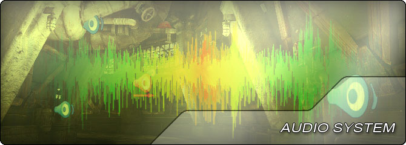

UDN
Search public documentation:
AudioHomeCH
English Translation
日本語訳
한국어
Interested in the Unreal Engine?
Visit the Unreal Technology site.
Looking for jobs and company info?
Check out the Epic games site.
Questions about support via UDN?
Contact the UDN Staff
日本語訳
한국어
Interested in the Unreal Engine?
Visit the Unreal Technology site.
Looking for jobs and company info?
Check out the Epic games site.
Questions about support via UDN?
Contact the UDN Staff
UE3 主页 > 音频主页
音频主页

有时候声音是在游戏开发过程中容易被忽略的一个方面，但是它对创建高水准拟真环境至关重要。从关卡中的环境声效到载具或武器发出的交互性声效再到角色的发言对话框，游戏中的音频可以造就或破坏用户的体验。在游戏中加入音频听起来确实是它应该是一件很难的任务。虚幻引擎 3 的音频系统提供了可以制作游戏声音的工具盒功能，赋予它们理想的感觉。这很重要，因为它意味着只要在外部应用程序中生成一个空白声音版本后，就可以导入到引擎中进行制作，创作出相应的效果。- 声效编辑器用户指南 - 创建和修改声效的用户指南。
- 使用声音 Actor - 有关虚幻引擎 3 中的环境声效 actor 的描述。
- 使用环境分区 - 在虚幻引擎 3 中使用并设置 Ambient Zone（环境分区）。